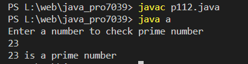

Write a Java program to check whether the number is a prime number or not
Code:-
import java.util.*;
class a
{
public static void main(String[] args) {
// initial count of factors
int count = 0;
// creating an instance of Scanner class
Scanner sc = new Scanner(System.in);
System.out.println("Enter a number to check prime number");
// to take input from user
int num = sc.nextInt();
// to check prime number
if(num == 2) {
System.out.println(num + " is a prime number");
} else {
// checking number of factors
for(int i = 1; i <= num; i++) {
if(num % i == 0) {
count++;
}
}
// checking number of counts to print result
if(count == 2) {
System.out.println(num + " is a prime number");
} else {
System.out.println(num + " is not a prime number");
}
}
}
}
Output:-
